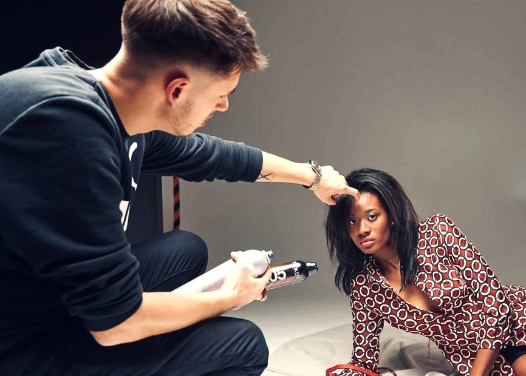
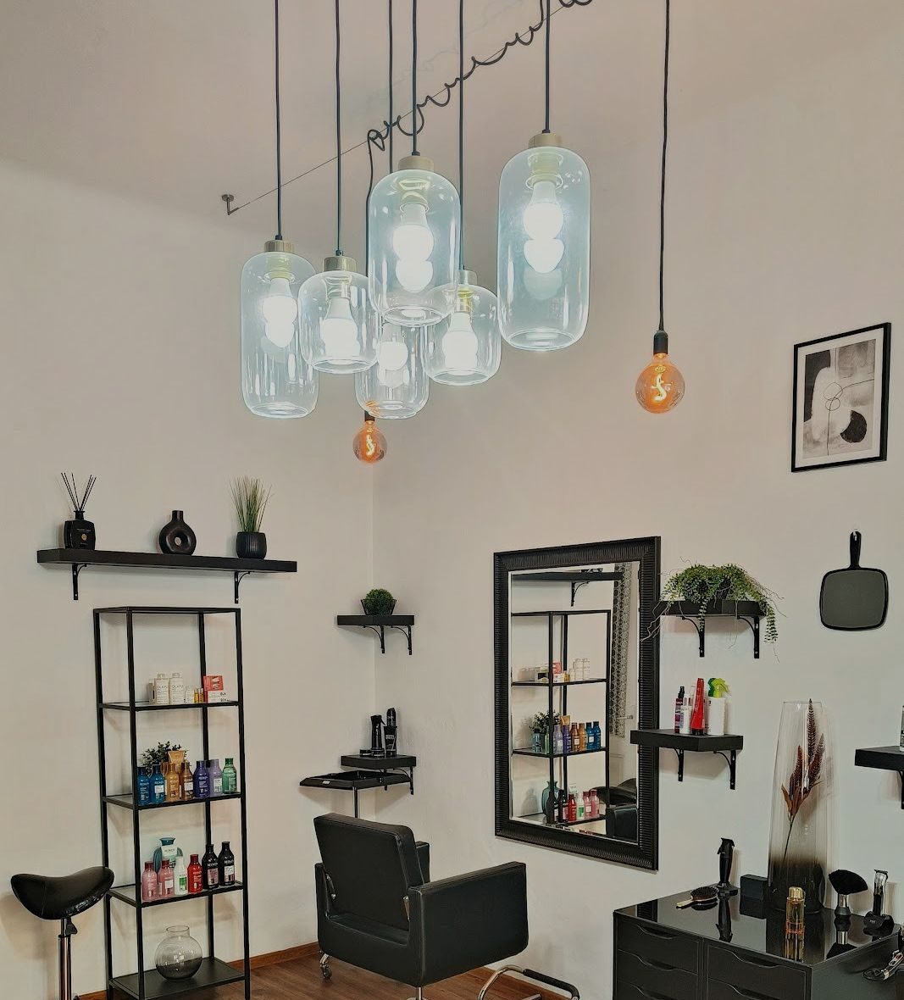
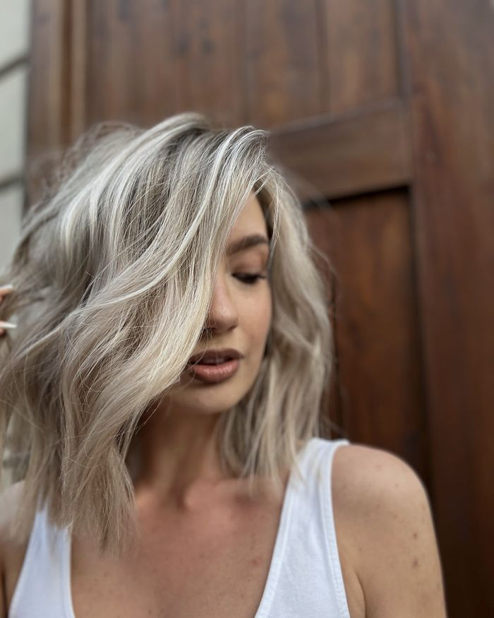
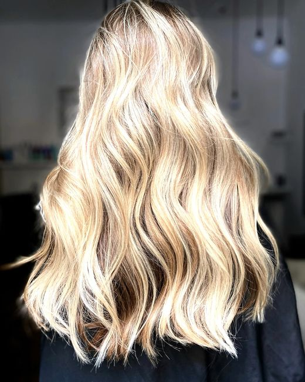
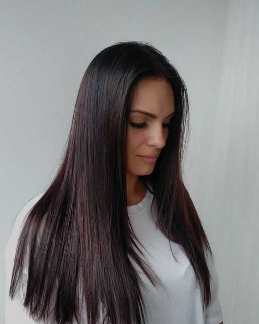
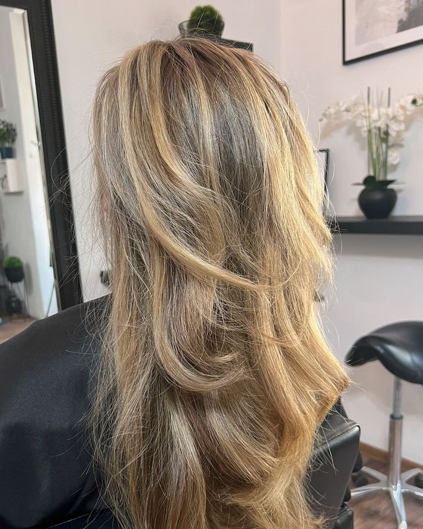
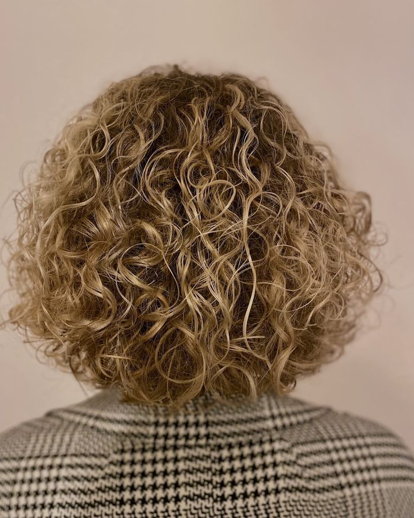
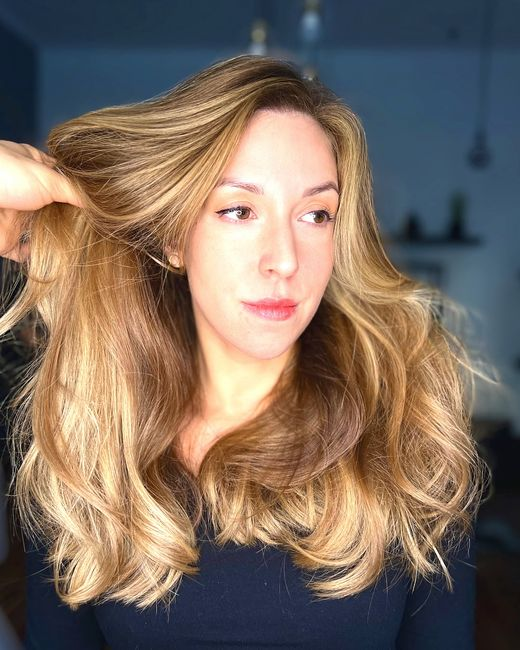

Balada Hair

Vlasové studio v Charkovské ulici ve Vršovicích. Jsem David Balada.
Objednávám vás dopředu, ať na vás mám čas.
4,9 ze 66 recenzí na Googlu Zavolat 776 375 435Co dělám
Nejvíc mi jde o zdravé vlasy. Řeknu vám, co jim pomůže, a ukážu, jak se o ně starat doma.
- Střih
- Barvení
- Styling
- Péče o zdraví vlasů
- Vlnité a kudrnaté vlasy metodou CGM
- Svatební účesy

Moje práce






Co mi lidé napsali
„David vždy skvěle poradí a vyjde vstříc mým požadavkům. Svoji práci odvádí precizně, ať už se jedná o barvení, střih nebo styling.“
Šárka, Google
„Moc děkuji Šárko za hezkou recenzi s fotkou :)! Těším se na příště.“
„K Davidovi chodím již přes deset let a neměnila bych! Měla jsem vždy suché a lámavé vlasy a od té doby, co jsou v péči Davida, vidím velké rozdíly.“
Nela, Google
„Moooc děkuji za tak pěknou recenzi! Těším se na dalších 10 let :)“
„Úžasný a profi přístup, opravdu jsem měla jistotu, že střih bude perfektní a je.“
Linda, Google
„Lindo, moc děkuji za tak pěknou recenzi! :) Těším se na příště“
Jak se ke mně objednáte
Termín domlouvám po telefonu. Zavolejte a najdeme čas, který vám sedne.
776 375 435Charkovská 20, 101 00 Praha 10 – Vršovice
Kousek od tramvajové zastávky. Platit můžete kartou i bezkontaktně.